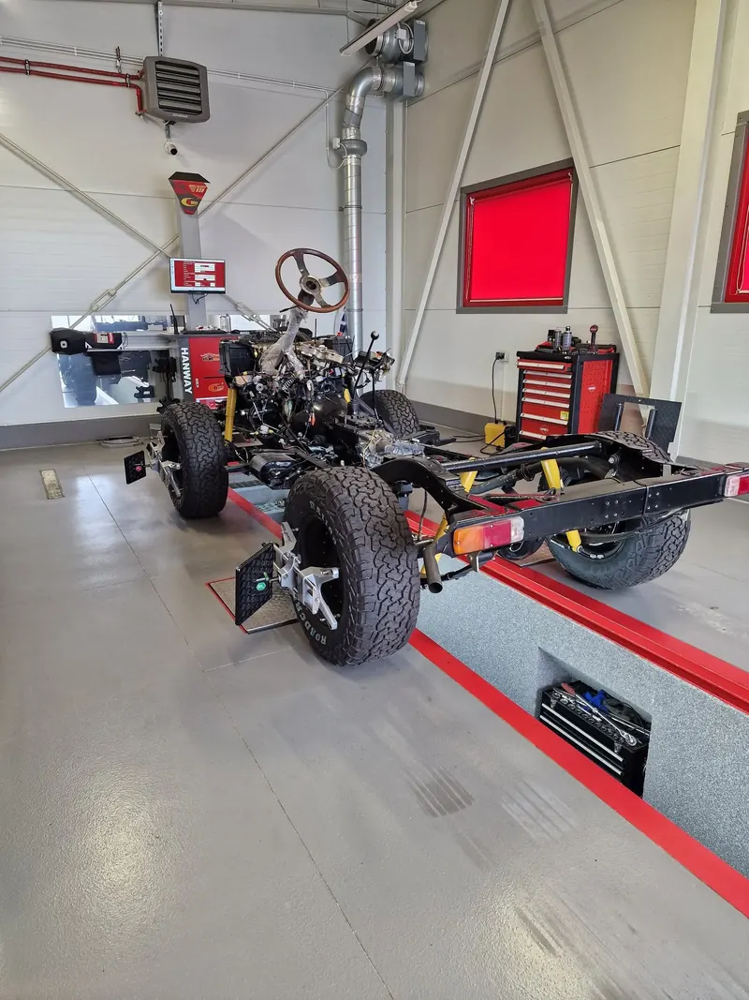

Co dokładnie stało na stanowisku
Kompletne podwozie bez nadwozia: sztywne mosty z przodu i z tyłu, resory piórowe, amortyzatory, wyciągarka na przednim zderzaku, silnik ze skrzynią i sprawny układ kierowniczy zakończony kierownicą osadzoną wprost na kolumnie. Na obręczach – komplet głowic pomiarowych.
I to wystarczy. Nasz aligner 3D HANWAY liczy kąty na podstawie położenia tarcz pomiarowych zamocowanych na kołach, odnosząc je do osi samego pojazdu. Nadwozie nie jest punktem odniesienia i nie bierze udziału w pomiarze. Z punktu widzenia urządzenia „samochód" to cztery koła i to, co je łączy.
Po co mierzyć geometrię przed montażem nadwozia
Przy odbudowie na ramie kolejność prac ma znaczenie finansowe. Pomiar na tym etapie odpowiada na pytanie, czy mosty stoją prosto względem ramy – zanim właściciel wyda pieniądze na blacharkę, lakier i montaż wnętrza.
- Wychodzi skrzywiony most, źle osadzony resor albo przesunięty sworzeń centrujący – czyli rzeczy, które poprawia się mechanicznie, a nie regulacją.
- Widać, czy tylna oś prowadzi pojazd zgodnie z jego osią wzdłużną. Auto, które „jedzie bokiem" mimo prostej kierownicy, ma problem właśnie tutaj.
- Podwozie da się bezpiecznie przestawiać po warsztacie na własnych kołach.
Poprawienie tego teraz kosztuje kilka godzin pracy. Po złożeniu auta te same czynności oznaczają demontaż sporej części tego, co właśnie zostało zmontowane.

Czego taki pomiar nie zastępuje
Tu trzeba być uczciwym: to nie jest ustawienie końcowe. Geometria zmienia się wraz z obciążeniem pojazdu. Bez nadwozia, foteli, szyb, wnętrza i paliwa rama siedzi wyżej, a resory są znacznie mniej ugięte niż będą w gotowym aucie. Przy zawieszeniu na piórach różnica wysokości przekłada się bezpośrednio na kąty.
Pomiar na gołej ramie to punkt wyjścia i kontrola mechaniki. Po złożeniu auta geometrię trzeba powtórzyć przy docelowej masie i wysokości – i dopiero ten drugi pomiar jest ustawieniem, na którym samochód pojedzie. Dla aut, które wymagają pomiaru w warunkach obciążenia, mamy w cenniku osobną pozycję: dociążenie samochodu do geometrii (70 zł).
Co w ogóle da się wyregulować na sztywnych mostach
Zawieszenie zależne daje mniej pól regulacji niż wielowahacz w aucie osobowym:
- Zbieżność – regulowana drążkiem kierowniczym. To podstawowe i najczęściej korygowane ustawienie.
- Kąt wyprzedzenia sworznia (caster) – korygowany klinami między resorem a mostem albo obrotem mostu.
- Pochylenie koła (camber) – praktycznie nieregulowalne, wynika z geometrii samego mostu. Dlatego odchyłka jest cenną informacją diagnostyczną: najczęściej oznacza skrzywiony most lub luz w zwrotnicy.
Znaczenie każdego z tych kątów i typowe wzorce zużycia opon rozbieramy na czynniki pierwsze na stronie geometrii kół 3D.
Ile kosztuje taki pomiar
Sam pomiar to 150 zł – stawka jest taka sama dla każdego pojazdu. Regulacja zaczyna się od 250 zł za oś i zależy od konstrukcji zawieszenia. Pełne stawki znajdziesz w cenniku, a termin zarezerwujesz online lub telefonicznie.
Warto pamiętać, że pojazd po tak głębokiej odbudowie będzie musiał przejść badanie techniczne, zanim legalnie wróci na drogę. Jeśli planujesz odbudowę, zadzwoń wcześniej – podpowiemy, w jakiej kolejności ustawić poszczególne etapy.
Kawał roboty przed właścicielem. Kibicujemy.